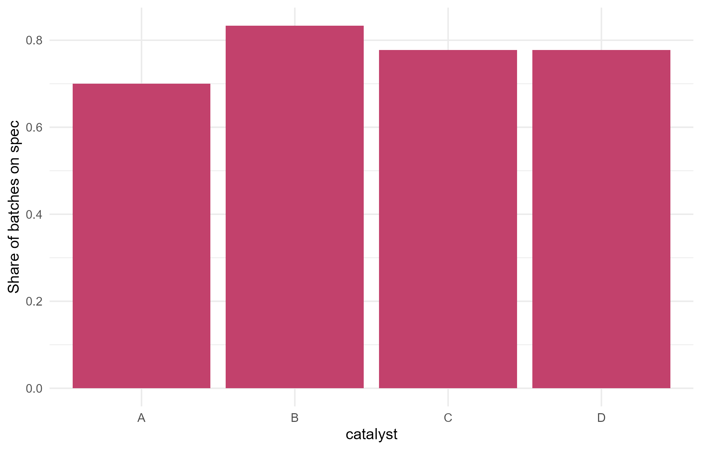

Module 0 · Lesson 6 of 14 Week 6 of 160 About 5–7 hours
Transforming data with dplyr
Filter, sort, select, create and summarize, one readable step at a time
Use dplyr’s verbs and the pipe to filter rows, sort them, choose columns, create new variables and compute grouped summaries.
Data rarely arrives in exactly the shape you need. You want only the night-shift batches, a few of the columns, a new column computed from the others, or a summary for each catalyst. You’ve done all of this with square brackets already. The dplyr package does the same jobs with a handful of verbs that read almost like English, chained together with the pipe. It’s part of the tidyverse, and you’ll use it in every module from here on.
dplyr code reads like a recipe: “take the batches, then keep the night shift, then group by catalyst, then average the yield.” Once you get the hang of it, you’ll never want to go back!
In this lesson you’ll:
- chain steps together with the pipe
|> - keep rows with
filter()and sort them witharrange() - choose columns with
select() - create new columns with
mutate(),if_else()andcase_when() - summarize by group with
group_by(),summarise()andcount()
Meet dplyr
library(dplyr)
#>
#> Attaching package: 'dplyr'
#> The following objects are masked from 'package:stats':
#>
#> filter, lag
#> The following objects are masked from 'package:base':
#>
#> intersect, setdiff, setequal, unionLoading dplyr prints a message that some functions are masked. dplyr has its own filter() and lag(), which now take priority over the ones in R’s stats package. That’s expected, and fine.
We’ll use the reactor batches again. Turning them into a tibble, the tidyverse’s version of a data frame, makes them print more helpfully: just the first 10 rows, with each column’s type shown under its name.
batches <- as_tibble(read.csv("data/reactor_batches.csv"))
batches
#> # A tibble: 40 × 10
#> batch_id shift catalyst temp_C pressure_bar residence_min alarms yield_pct
#> <chr> <chr> <chr> <dbl> <dbl> <dbl> <int> <dbl>
#> 1 B01 day B 185. 3.72 47.2 1 70.2
#> 2 B02 day D 176 5.31 37.9 1 53.7
#> 3 B03 day C 178. 5.12 32.5 1 49.2
#> 4 B04 night B 184. 4.93 60.7 1 65.3
#> 5 B05 day D 180. 5.22 41.1 1 53.4
#> 6 B06 day A 186. 5.36 47.1 0 58.5
#> 7 B07 night A NA 4.53 64 1 74.1
#> 8 B08 day A 202. 6.02 38.9 1 55.3
#> 9 B09 night B 186. 4.49 38.8 1 56.4
#> 10 B10 night B 186. 5.81 21 3 31.1
#> # ℹ 30 more rows
#> # ℹ 2 more variables: purity_pct <dbl>, on_spec <lgl><chr> means text, <dbl> means a decimal number (“double”), <int> a whole number and <lgl> TRUE/FALSE. A tibble is still a data frame, so everything you already know keeps working.
The pipe: |>
The pipe takes the thing on its left and passes it in as the first argument of the function on its right. These two lines do the same thing:
summary(batches$yield_pct)
batches$yield_pct |> summary()Read |> as “and then”. Its real power shows when you chain several steps. Compare the nested version with the piped one:
# Inside out: hard to read
summarise(filter(batches, catalyst == "B"), mean_yield = mean(yield_pct))
#> # A tibble: 1 × 1
#> mean_yield
#> <dbl>
#> 1 55.7
# Top to bottom: "take batches, then keep catalyst B, then summarize"
batches |>
filter(catalyst == "B") |>
summarise(mean_yield = mean(yield_pct))
#> # A tibble: 1 × 1
#> mean_yield
#> <dbl>
#> 1 55.7You’ll also see %>% in older code and online answers. It’s the original pipe from the magrittr package, and it works almost the same way. In RStudio, Ctrl + Shift + M types a pipe (Cmd + Shift + M on a Mac). Tick Use native pipe operator under Tools → Global Options → Code to make it type |>.
Every dplyr verb works the same way: the first argument is a data frame, the rest say what to do, using column names without quotes, and the result is a new data frame. The original never changes unless you save the result with <-.
filter(): keep rows
filter() keeps the rows where a condition is TRUE:
batches |> filter(catalyst == "B")
#> # A tibble: 12 × 10
#> batch_id shift catalyst temp_C pressure_bar residence_min alarms yield_pct
#> <chr> <chr> <chr> <dbl> <dbl> <dbl> <int> <dbl>
#> 1 B01 day B 185. 3.72 47.2 1 70.2
#> 2 B04 night B 184. 4.93 60.7 1 65.3
#> 3 B09 night B 186. 4.49 38.8 1 56.4
#> 4 B10 night B 186. 5.81 21 3 31.1
#> 5 B11 night B 171. 5.14 45.1 2 74.8
#> 6 B12 day B 170. 4.67 38.3 2 57.1
#> 7 B14 night B 169. 4.65 30 3 33.8
#> 8 B18 day B 166. 4.72 32.6 3 48.9
#> 9 B21 day B 184. 5.66 37.1 1 55.9
#> 10 B23 day B NA 5.36 39.4 1 55.4
#> 11 B28 night B 187. 5.01 41.6 1 56.3
#> 12 B30 night B 179. 5.52 51.2 2 63.5
#> # ℹ 2 more variables: purity_pct <dbl>, on_spec <lgl>Separate several conditions with commas, which means “and”. Use | for “or”, and %in% for “is one of”:
batches |> filter(shift == "night", alarms >= 3)
#> # A tibble: 3 × 10
#> batch_id shift catalyst temp_C pressure_bar residence_min alarms yield_pct
#> <chr> <chr> <chr> <dbl> <dbl> <dbl> <int> <dbl>
#> 1 B10 night B 186. 5.81 21 3 31.1
#> 2 B14 night B 169. 4.65 30 3 33.8
#> 3 B27 night D 178. 3.87 57.4 3 63
#> # ℹ 2 more variables: purity_pct <dbl>, on_spec <lgl>
batches |> filter(catalyst %in% c("A", "D"), yield_pct > 70)
#> # A tibble: 2 × 10
#> batch_id shift catalyst temp_C pressure_bar residence_min alarms yield_pct
#> <chr> <chr> <chr> <dbl> <dbl> <dbl> <int> <dbl>
#> 1 B07 night A NA 4.53 64 1 74.1
#> 2 B29 day D 194. 4.93 71.7 1 74
#> # ℹ 2 more variables: purity_pct <dbl>, on_spec <lgl>Unlike square brackets, filter() quietly drops the rows where the condition is NA, so the missing-value trap from Lesson 3 can’t catch you here. To find the rows with missing values, ask for them: filter(is.na(temp_C)).
Your turn. Keep only the batches that used catalyst C. (batches and dplyr are ready in every exercise.)
Compare catalyst with the text "C" using ==.
batches |> filter(catalyst == "C")Your turn. Now keep the night-shift batches with a yield above 60%.
Separate the two conditions with a comma: one about shift, one about yield_pct.
batches |> filter(shift == "night", yield_pct > 60)arrange(): sort rows
arrange() sorts the rows by one or more columns, smallest first. Wrap a column in desc() to sort from largest to smallest:
batches |> arrange(desc(yield_pct))
#> # A tibble: 40 × 10
#> batch_id shift catalyst temp_C pressure_bar residence_min alarms yield_pct
#> <chr> <chr> <chr> <dbl> <dbl> <dbl> <int> <dbl>
#> 1 B11 night B 171. 5.14 45.1 2 74.8
#> 2 B07 night A NA 4.53 64 1 74.1
#> 3 B29 day D 194. 4.93 71.7 1 74
#> 4 B01 day B 185. 3.72 47.2 1 70.2
#> 5 B33 night D 166. 5.3 65.4 1 69.5
#> 6 B16 day A 179. 5.12 54 0 68.7
#> 7 B04 night B 184. 4.93 60.7 1 65.3
#> 8 B20 night C 189. 4.25 53.1 1 65.2
#> 9 B39 night C 192. 5.54 38.4 1 65.2
#> 10 B30 night B 179. 5.52 51.2 2 63.5
#> # ℹ 30 more rows
#> # ℹ 2 more variables: purity_pct <dbl>, on_spec <lgl>With several columns, the later ones break ties in the earlier ones: arrange(catalyst, desc(yield_pct)) sorts by catalyst, then by yield within each catalyst. Missing values always go last.
Your turn. Sort the batches from the purest to the least pure.
Wrap purity_pct in desc() to sort from largest to smallest.
batches |> arrange(desc(purity_pct))select(): choose columns
select() keeps the columns you name, in the order you name them:
batches |> select(batch_id, catalyst, yield_pct)
#> # A tibble: 40 × 3
#> batch_id catalyst yield_pct
#> <chr> <chr> <dbl>
#> 1 B01 B 70.2
#> 2 B02 D 53.7
#> 3 B03 C 49.2
#> 4 B04 B 65.3
#> 5 B05 D 53.4
#> 6 B06 A 58.5
#> 7 B07 A 74.1
#> 8 B08 A 55.3
#> 9 B09 B 56.4
#> 10 B10 B 31.1
#> # ℹ 30 more rowsIt has handy shortcuts. A colon picks a range of columns, a minus sign drops columns, and helper functions match columns by their names or types:
batches |> select(temp_C:alarms) # every column from temp_C to alarms
batches |> select(-batch_id) # everything except batch_id
batches |> select(starts_with("temp")) # also ends_with() and contains()
batches |> select(where(is.numeric)) # only the numeric columnsrename() changes column names. You write new_name = old_name:
batches |> rename(T_reactor = temp_C) |> names()
#> [1] "batch_id" "shift" "catalyst" "T_reactor"
#> [5] "pressure_bar" "residence_min" "alarms" "yield_pct"
#> [9] "purity_pct" "on_spec"Your turn. Keep batch_id and every column whose name ends with _pct.
Name batch_id, then use the helper ends_with("_pct"), separated by a comma.
batches |> select(batch_id, ends_with("_pct"))mutate(): create new columns
mutate() adds new columns, computed from the existing ones:
batches |>
mutate(
pressure_kPa = pressure_bar * 100,
impurity_pct = 100 - purity_pct
) |>
select(batch_id, pressure_kPa, impurity_pct)
#> # A tibble: 40 × 3
#> batch_id pressure_kPa impurity_pct
#> <chr> <dbl> <dbl>
#> 1 B01 372 1.10
#> 2 B02 531 1.30
#> 3 B03 512 0.400
#> 4 B04 493 1.17
#> 5 B05 522 0.820
#> 6 B06 536 1.09
#> 7 B07 453 0.810
#> 8 B08 602 2.29
#> 9 B09 449 1.43
#> 10 B10 581 2.39
#> # ℹ 30 more rowsColumns from conditions
if_else() makes a column from a yes/no condition, like ifelse() from Lesson 4, but stricter about types. case_when() handles several categories, checking its conditions in order like if and else if. Each line is written condition ~ value:
batches |>
mutate(band = case_when(
temp_C < 175 ~ "cool",
temp_C < 185 ~ "normal",
temp_C >= 185 ~ "hot"
)) |>
count(band)
#> # A tibble: 4 × 2
#> band n
#> <chr> <int>
#> 1 cool 11
#> 2 hot 12
#> 3 normal 15
#> 4 <NA> 2Notice the NA: those are the two batches with no temperature. None of the conditions is TRUE for them, so they get NA, which is honest. You’ll often see .default = "hot" used instead of the last condition, as a catch-all for everything else. Be careful with that: the missing temperatures would land in .default too, and you’d count 14 “hot” batches when only 12 really are.
Your turn. Add a column temp_K with the reactor temperature in kelvin.
Inside mutate(), write new_column = expression.
batches |> mutate(temp_K = temp_C + 273.15)The new column goes at the right-hand end, so the preview may not show it. Add |> select(temp_C, temp_K) to see it.
Your turn. Grade every batch by its yield: "poor" below 50%, "good" from 50% up to (but not including) 65%, and "excellent" from 65% up. Then count the batches in each grade.
Each line is condition ~ "label", separated by commas. The conditions are checked in order, so after yield_pct < 50 ~ "poor", the next line only needs yield_pct < 65.
batches |>
mutate(grade = case_when(
yield_pct < 50 ~ "poor",
yield_pct < 65 ~ "good",
yield_pct >= 65 ~ "excellent"
)) |>
count(grade)summarise() and group_by()
summarise() collapses a data frame into a single row of summary numbers:
batches |>
summarise(
n = n(),
mean_yield = mean(yield_pct),
sd_yield = sd(yield_pct),
best = max(yield_pct)
)
#> # A tibble: 1 × 4
#> n mean_yield sd_yield best
#> <int> <dbl> <dbl> <dbl>
#> 1 40 57.6 9.75 74.8n() counts the rows. If a column has missing values, remember na.rm = TRUE, or the summary comes out NA.
summarise() gets really powerful with group_by(). Grouping splits the data into one piece per group, and summarise() then works on each piece separately:
batches |>
group_by(shift) |>
summarise(
n = n(),
mean_yield = mean(yield_pct),
on_spec_rate = mean(on_spec)
)
#> # A tibble: 2 × 4
#> shift n mean_yield on_spec_rate
#> <chr> <int> <dbl> <dbl>
#> 1 day 22 56.7 0.727
#> 2 night 18 58.8 0.833You can group by several variables at once. Add .groups = "drop" to remove the grouping afterwards (and to silence a message about it):
batches |>
group_by(shift, catalyst) |>
summarise(n = n(), mean_yield = mean(yield_pct), .groups = "drop")
#> # A tibble: 8 × 4
#> shift catalyst n mean_yield
#> <chr> <chr> <int> <dbl>
#> 1 day A 7 59.0
#> 2 day B 5 57.5
#> 3 day C 4 48.1
#> 4 day D 6 59.2
#> 5 night A 3 62.4
#> 6 night B 7 54.5
#> 7 night C 5 60.2
#> 8 night D 3 62.9Recent versions of dplyr also let you group for a single step with .by, which some people find easier: summarise(mean_yield = mean(yield_pct), .by = shift).
Counting rows per group is so common that it has its own verb:
batches |> count(shift, catalyst)
#> # A tibble: 8 × 3
#> shift catalyst n
#> <chr> <chr> <int>
#> 1 day A 7
#> 2 day B 5
#> 3 day C 4
#> 4 day D 6
#> 5 night A 3
#> 6 night B 7
#> 7 night C 5
#> 8 night D 3Your turn. Compute the mean purity (mean_purity) for each catalyst.
Group by catalyst, then summarise with mean(purity_pct).
batches |>
group_by(catalyst) |>
summarise(mean_purity = mean(purity_pct))Putting it together
Good analysis starts with a question. How does each catalyst perform overall? Each step of the answer is one verb, and the whole thing reads top to bottom:
batches |>
group_by(catalyst) |>
summarise(
n = n(),
mean_yield = mean(yield_pct),
sd_yield = sd(yield_pct)
) |>
mutate(rsd_pct = 100 * sd_yield / mean_yield) |>
arrange(rsd_pct)
#> # A tibble: 4 × 5
#> catalyst n mean_yield sd_yield rsd_pct
#> <chr> <int> <dbl> <dbl> <dbl>
#> 1 A 10 60.0 6.34 10.6
#> 2 D 9 60.5 7.14 11.8
#> 3 C 9 54.8 10.2 18.6
#> 4 B 12 55.7 13.0 23.3Catalyst A is the most consistent: its yields vary the least relative to their mean (the RSD from Lesson 4). Catalyst B is the least predictable. Consistency matters a lot in production: a steady 60% is often worth more than a yield that swings anywhere between 31% and 75%, like catalyst B’s.
A pipeline can flow straight into a ggplot. Notice the switch from |> between data steps to + between plot layers:
library(ggplot2)
batches |>
group_by(catalyst) |>
summarise(on_spec_rate = mean(on_spec)) |>
ggplot(aes(x = catalyst, y = on_spec_rate)) +
geom_col(fill = "#C2416C") +
labs(y = "Share of batches on spec") +
theme_minimal()
dplyr and base R side by side
| Task | dplyr | Base R (Lesson 3) |
|---|---|---|
| Keep rows | filter(df, x > 5) |
df[df$x > 5, ] or subset(df, x > 5) |
| Sort rows | arrange(df, desc(x)) |
df[order(df$x, decreasing = TRUE), ] |
| Keep columns | select(df, a, b) |
df[, c("a", "b")] |
| New column | mutate(df, z = x / y) |
df$z <- df$x / df$y |
| Summary by group | group_by(df, g) |> summarise(m = mean(x)) |
aggregate(x ~ g, data = df, FUN = mean) |
Three habits for pipelines people can read: put each verb on its own line, with the pipe at the end of the line before. Give new columns clear names, like mean_yield rather than m. And keep pipelines short. If one passes about ten steps, save a middle result with <-.
Your turn. Build a catalyst report: for each catalyst, compute the number of batches (n), the mean yield (mean_yield) and the on-spec rate (on_spec_rate). Sort it so the highest mean yield comes first.
Inside summarise(): n = n(), mean_yield = mean(yield_pct), on_spec_rate = mean(on_spec).
To put the highest mean yield first, arrange by desc(mean_yield).
batches |>
group_by(catalyst) |>
summarise(
n = n(),
mean_yield = mean(yield_pct),
on_spec_rate = mean(on_spec)
) |>
arrange(desc(mean_yield))Your turn: fix the bug. This line gives an error. Read the message (it’s unusually helpful) and fix the code.
dplyr noticed a named input. A single = names an argument; to compare, you need ==.
batches |> filter(catalyst == "A")Challenge round
Challenge 1 · Better or worse than its catalyst? For each batch, compute vs_catalyst: its yield minus the mean yield of its own catalyst. Keep only the columns batch_id, catalyst, yield_pct and vs_catalyst.
Group by catalyst, then use mutate() instead of summarise(), because you want to keep every batch. Inside a grouped mutate(), mean(yield_pct) is the mean of each batch’s own group.
group_by(catalyst) |> mutate(vs_catalyst = yield_pct - mean(yield_pct)) |> ungroup() |> select(...)
batches |>
group_by(catalyst) |>
mutate(vs_catalyst = yield_pct - mean(yield_pct)) |>
ungroup() |>
select(batch_id, catalyst, yield_pct, vs_catalyst)Within each catalyst, the new column adds up to zero: the deviations from Lesson 2, computed group by group.
Challenge 2 · The worst batch for each catalyst. Process engineers learn a lot from their worst runs. For each catalyst, find the batch with the lowest yield, and show its batch_id, catalyst and yield_pct.
filter() works within groups too. After group_by(catalyst), the condition yield_pct == min(yield_pct) keeps the lowest yield in each group.
batches |> group_by(catalyst) |> filter(yield_pct == min(yield_pct)) |> select(______)
batches |>
group_by(catalyst) |>
filter(yield_pct == min(yield_pct)) |>
select(batch_id, catalyst, yield_pct)slice_min(yield_pct, n = 1) does the same job as that filter(). B10 and B40 are the really bad ones, at 31% and 37%. A good next step would be to check their alarm counts!
Quick quiz
1. x |> f(y) is the same as…
The pipe passes the left-hand side in as the first argument of the function on the right.
2. Which verb keeps only some of the rows?
filter() chooses rows by a condition. select() chooses columns.
3. Which verb keeps only some of the columns?
select() chooses columns by name, by position, or with a helper like ends_with().
4. How many rows does batches |> group_by(catalyst) |> summarise(m = mean(yield_pct)) return?
One row per group, and there are four catalysts.
5. What happens to rows where the condition in filter() is NA?
filter() keeps only the rows where the condition is TRUE. Square brackets, by contrast, return rows of NAs, as you saw in Lesson 3.
6. What’s the difference between group_by() |> summarise() and group_by() |> mutate()?
Use summarise() for a summary table, and a grouped mutate() to compare each row with its own group.
Wrap-up
You’ve got a whole new toolkit. Here’s what you can do now:
- Pipe:
|>passes a result into the next function, so code reads top to bottom: “take this, then do that”. - Pick and sort:
filter()keeps rows,arrange()sorts them,select()chooses columns andrename()renames them. - Create:
mutate()makes new columns, andif_else()andcase_when()turn conditions into categories. Check what they do with missing values! - Summarize:
summarise()withgroup_by()gives one row per group, andcount()counts rows per group. - Compare within groups: a grouped
mutate()orfilter()works inside each group.
TipPractice in RStudio (optional, about an hour)
Work in your stats-course project.
- Install the tidyverse if you haven’t yet:
install.packages("tidyverse"). Thenlibrary(tidyverse)loads dplyr, ggplot2 and several other packages you’ll meet in Module 1. - Ask and answer questions about the batches, one pipeline each, in a script called
week06.R:- What are the mean, median and standard deviation of the yield on each shift?
- What’s the on-spec rate for batches with 2 or more alarms, compared with the rest? (Watch out for the missing alarm count.)
- Make a
temp_bandcolumn withcase_when(), then compare the mean purity across the bands. - Which five batches had the highest purity? Show only their ID, catalyst, temperature and purity.
- Save a summary table with
write.csv(..., "output/catalyst_report.csv", row.names = FALSE)(create anoutputfolder first). - From pipeline to plot. Pipe one of your summaries into
ggplot()and draw it withgeom_col(), remembering the+between layers.
NoteKey words from this lesson
- Pipe
-
The
|>operator, which passes the result on its left into the function on its right. - Verb
-
A dplyr function that does one job to a data frame, such as
filter(),select()ormutate(). - Tibble
- The tidyverse’s version of a data frame. It prints more compactly and is a little stricter.
- Grouped data
-
A data frame split into groups by
group_by(), so that the next verbs work within each group. - Summary statistic
- A single number that describes many values, such as a mean, median, count or standard deviation.
NoteWant to read more?
- R for Data Science (2e), “Data transformation”. The dplyr verbs in more depth, using every flight that left New York in 2013.
- R for Data Science (2e), “Workflow: code style”. How to write pipelines that other people, and future you, can read.